<section class="title-slide-lol"> ## Introduction to AI ~~Ethics~~ Safety Gabriele Graffieti ---- Deep Learning Course Seminar <!-- .element: class="smaller grey italic" --> May 19, 2025 <!-- .element: class="smaller grey italic" --> Note: Interacion and questions </section> --- ## Who I am <div class="two-c-container" data-markdown> <div class="two-c-col-l"> </div> <div class="two-c-col-r" data-markdown> - Sr. Algorithm Engineer @ [Ambrella](https://www.ambarella.com) - Deep Learning & Computer Vision - Past Head of AI research @ [AI for People](https://www.aiforpeople.org) - Past researche \& PhD Student @ [Unibo](https://www.unibo.it/en/homepage) - Main research interests: Continual Learning, GenAI and Ethics </div> </div> --- <section data-background-iframe="https://www.ambarella.com" data-background-interactive> </section> --- ### Ambarella - Vislab - Research division of Ambarella on self-driving cars - 80+ people only in Parma <!-- .element: class="fragment" data-fragment-index="1" --> - ~1,000 worldwide (US, TW, IT, CH, DE, ...) <!-- .element: class="fragment" data-fragment-index="2" --> - On self-driving cars (sofware), our competitors are Tesla, Wayve, Waymo, Uber, etc <!-- .element: class="fragment" data-fragment-index="3" --> - On self-driving cars (hardware), our competitors are Nvidia, Mobileye, etc <!-- .element: class="fragment" data-fragment-index="4" --> --- ### Ambarella - Vislab - 1998 1,000 miles (2,000+ km) on Italian highways with autonomous steering <!-- .element: class="fragment" data-fragment-index="1" --> - 2005-2007 DARPA grand urban challenge, 100% autonomous <!-- .element: class="fragment" data-fragment-index="2" --> - 2010 VIAC: 15k+ km autonomous driving (Parma-Beijing) <!-- .element: class="fragment" data-fragment-index="3" --> - 2013 PROUD: 13km in Parma fully autonomous (L4) <!-- .element: class="fragment" data-fragment-index="4" --> - 2015: Acquisition by Ambarella <!-- .element: class="fragment" data-fragment-index="5" --> - 2020: Full autonomous driving demo @ CES 2020 Las Vegas <!-- .element: class="fragment" data-fragment-index="6" --> - 2022-onwards: autonomous driving L4 in all environment with a single low power chip (no GPU, no high end CPU) <!-- .element: class="fragment" data-fragment-index="7" --> --- <section> <iframe width="1120" height="630" src="https://www.youtube.com/embed/x1glAcRP1TM?t=28" VQ=hd1080 frameborder="0" allow="accelerometer; autoplay; encrypted-media; gyroscope; picture-in-picture" allowfullscreen></iframe> </section> --- ### Ambarella - Vislab - What we do - State-of-the-art research on autonomous driving <!-- .element: class="fragment" data-fragment-index="1" --> - Only company in Italy (and one of the very few in Europe) to be allowed to test and drive in any road, at any time, with any traffic condition <!-- .element: class="fragment" data-fragment-index="2" --> - Both DL-based and classical approach to vehicle control, sensing, vision <!-- .element: class="fragment" data-fragment-index="3" --> - Sensing only based on cameras (1 stereo + 5 mono / 2 mono) + radars <!-- .element: class="fragment" data-fragment-index="4" --> --- ### Ambarella - Vislab - What we offer - A unique international research environment in Italy <!-- .element: class="fragment" data-fragment-index="1" --> - Ideas → development → deployment in T=0 <!-- .element: class="fragment" data-fragment-index="2" --> - Both industrial & academic research <!-- .element: class="fragment" data-fragment-index="3" --> - (Very) competitive salary & lot of benefits <!-- .element: class="fragment" data-fragment-index="4" --> - What we want <!-- .element: class="fragment" data-fragment-index="5" --> - You! <!-- .element: class="fragment" data-fragment-index="6" --> - Opening for thesis, PhD, jobs! <!-- .element: class="fragment" data-fragment-index="7" --> - If interested contact me or <!-- .element: class="fragment" data-fragment-index="8" --> - [careers-it@ambarella.com](mailto:careers@ambarella.com) <!-- .element: class="fragment" data-fragment-index="8" --> - [enascimbeni@ambarella.com](mailto:enascimbeni@ambarella.com) <!-- .element: class="fragment" data-fragment-index="8" --> --- _Our mission is to learn, pose questions and take initiative on how AI technology can be used for the social good._ --- ## Why AI safety and not AI ethics? - The ethical aspects and challenges of AI are nowadays almost common knowledge (even the Pope talked abut them). <!-- .element: class="fragment" data-fragment-index="1" --> - The misuse or criminal use of AI is well documented and known by the general public. <!-- .element: class="fragment" data-fragment-index="2" --> - AI Safety is a pretty recent buzzword that also encompass: <!-- .element: class="fragment" data-fragment-index="3" --> - Possible attacks on an ethically developed AI. <!-- .element: class="fragment" data-fragment-index="4" --> - Safe use of third parties AIs (e.g. chatGPT et simila). <!-- .element: class="fragment" data-fragment-index="5" --> - Good practices of AI development (from data collection to deployment). <!-- .element: class="fragment" data-fragment-index="6" --> - Focus on safety, a more concrete and measurable quality than ethics. <!-- .element: class="fragment" data-fragment-index="7" --> --- <section> <h2>Why AI safety?</h2> <a href="https://colab.research.google.com/drive/11J0UQC42BCXhXl6pjj68m2a9oNQgqKWS?usp=sharing" target="_blank">Demo!</a> </section> <section> <p>We ran a clinical trial on some cancer patients, and we collected data on those who benefited from the treatment.</p> <p class="fragment" data-fragment-index="1">We want to develop an ML model that, given the data of a new patient, will predict whether the patient will benefit from the new treatment.</p> </section> <section> <ol> <li>What model should I use?</li> <!-- .element: class="fragment" data-fragment-index="1" --> <ul> <li>Classification problem -> classifier?</li> <!-- .element: class="fragment" data-fragment-index="2" --> <li>Do we have all the information to trace a boundary between the two classes?</li> <!-- .element: class="fragment" data-fragment-index="3" --> <li>Is the information we have <i>complete</i>?</li> <!-- .element: class="fragment" data-fragment-index="4" --> </ul> </ol> </section> <section> 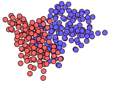 </section> <section> 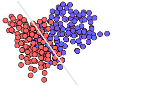 </section> <section> <ul> <li>We have all the information to trace a boundary between the two classes?</li> <ul> <li class="fragment" data-fragment-index="1">Does the data contains enough information to discriminate between the two classes?</li> <li class="fragment" data-fragment-index="2">Are there "hidden variables" that we don't know about?</li> <li class="fragment" data-fragment-index="3">Is a fully discriminitavive model the right choice here?</li> <li class="fragment" data-fragment-index="4">How can we do better?</li> </ul> </ul> <aside class="notes"> Example of cat vs dog (complete information) vs the current example (do not know the full causes) <br> Discriminative models have biases inside them for the complete information <br> This is the thing that you will face 99% of the time at work (we have this data, what can we extract?) </aside> </section> <section> 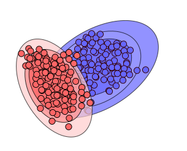 </section> <section> 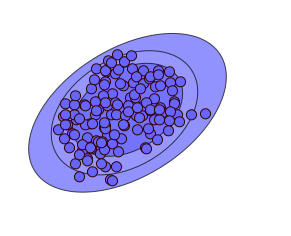 <p class="fragment smaller" data-fragment-index="1">Examples of generative models?</p> </section> --- ## But that was just an example right? 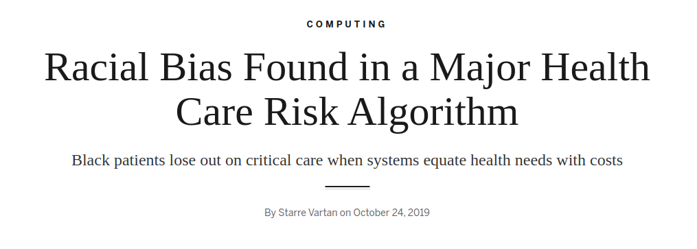 <!-- .element: class="fragment" data-fragment-index="1" --> <p class="fragment" data-fragment-index="1">Hint: <span class="fragment custom blur">think about how US healthcare works.</span></p> --- ## But that was just an example right? 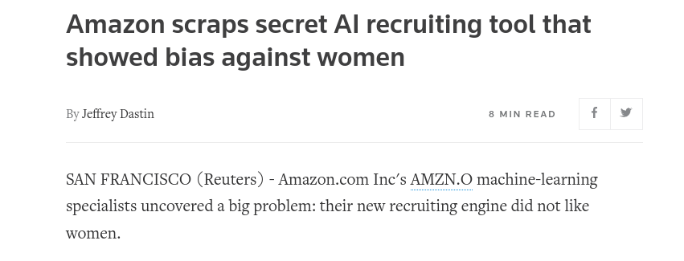 <p>Hint: <span class="fragment custom blur">think about gender representation inside tech jobs.</span></p> --- ## Well, we can try to fix this right? ### How? <!-- .element: class="fragment" data-fragment-index="1" --> --- ### First of all we need to detect the problem - How we tested the model? <!-- .element: class="fragment" data-fragment-index="1" --> - Did train/validation/test sets were collected from the same distribution of data? <!-- .element: class="fragment" data-fragment-index="2" --> - What metrics we used to evaluate the performance? <!-- .element: class="fragment" data-fragment-index="3" --> - What we mean by performance? <!-- .element: class="fragment" data-fragment-index="4" --> --- ### But if we remove all gender, ethnicity, or unwanted information from the data? - The AI system can infer them from remaining information <!-- .element: class="fragment" data-fragment-index="1" --> - Gender from height/weight ratio <!-- .element: class="fragment" data-fragment-index="2" --> - Ethnicity from specific disorders <!-- .element: class="fragment" data-fragment-index="3" --> - Level of weath from geographical information <!-- .element: class="fragment" data-fragment-index="4" --> - ... <!-- .element: class="fragment" data-fragment-index="5" --> Note: Beware of correlation between data and over representation! A dataset for type 2 diabetes is maily composed of overweight people Models are LAZY --- ### But models are really that powerful? #### Spoiler: yes <!-- .element: class="fragment" data-fragment-index="1" --> --- ### Let's make a test Question time: What is a randon number? Ok, now tell me a random integer between 1 and 10 <!-- .element: class="fragment" data-fragment-index="1" --> What the distribution of answers should look like? <!-- .element: class="fragment" data-fragment-index="2" --> --- 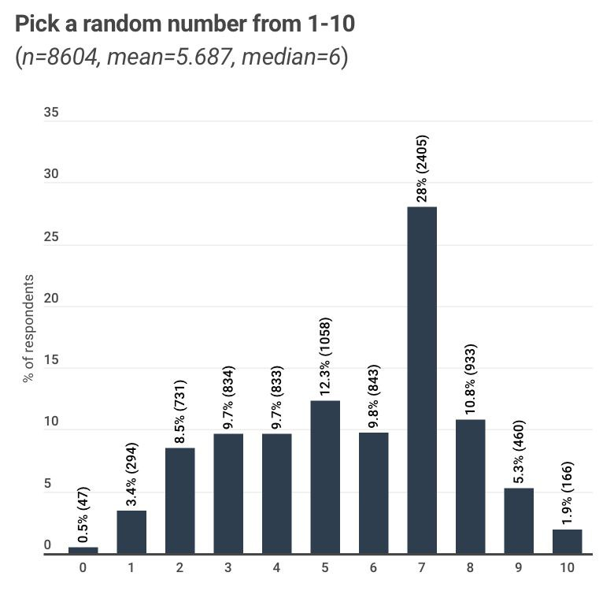 --- ### Now let's ask chatGPT <br/> What if we ask chatGPT that many times? <!-- .element: class="fragment smaller" data-fragment-index="3" --> --- <div class="r-stack"> 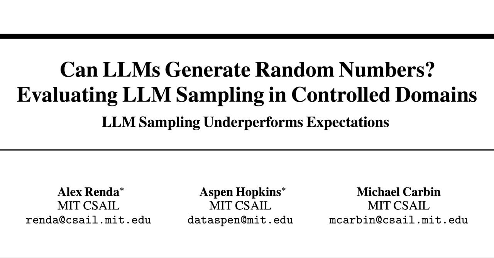 <div class="two-c-container"> <div class="two-c-col"> </div> <div class="two-c-col"> 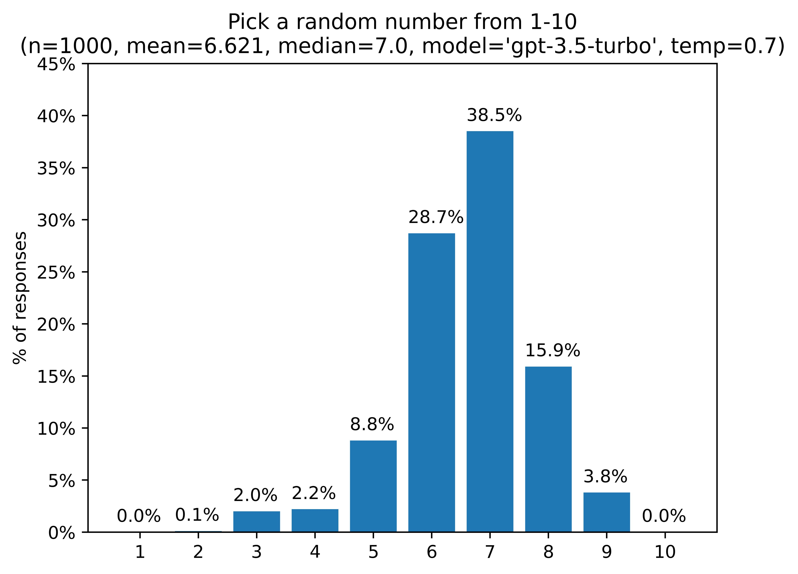 </div> </div> </div> [Can LLMs Generate Random Numbers? Evaluating LLM Sampling in Controlled Domains](https://arxiv.org/abs/2403.00742) <!-- .element: class="fragment smaller fade-out" data-fragment-index="1" --> --- #### And even more covertly 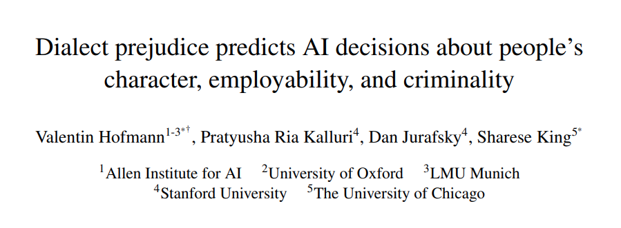 [Dialect prejudice predicts AI decisions about people's character, employability, and criminality](https://arxiv.org/abs/2403.00742) <!-- .element: class="smaller" --> --- ### One of the main enemies: bias > <!-- .element: class="fragment" data-fragment-index="1" --> "the action of supporting or opposing a particular person or thing in an unfair way, because of allowing personal opinions to influence your judgment." - Bias is not always unwanted <!-- .element: class="fragment" data-fragment-index="2" --> - Used to perceive possible dangers by almost all animals <!-- .element: class="fragment" data-fragment-index="3" --> - Pareidolia <!-- .element: class="fragment" data-fragment-index="4" --> - Basis of Bayesian Statistics (degree of belief) <!-- .element: class="fragment" data-fragment-index="5" --> --- ### Biases are in everyday life! <div class="two-c-container" data-markdown> <div class="two-c-col-l"> - Beauty bias <!-- .element: class="fragment" data-fragment-index="1" --> - Halo/Horns effect <!-- .element: class="fragment" data-fragment-index="2" --> - Conformity bias <!-- .element: class="fragment" data-fragment-index="3" --> - Status quo bias <!-- .element: class="fragment" data-fragment-index="4" --> - Authority bias <!-- .element: class="fragment" data-fragment-index="5" --> - Idiosyncratic bias <!-- .element: class="fragment" data-fragment-index="6" --> - ... <!-- .element: class="fragment" data-fragment-index="7" --> </div> <div class="two-c-col-r" data-markdown> 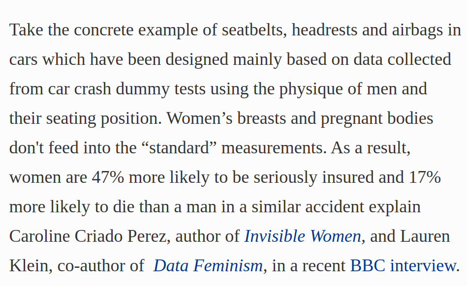 <!-- .element: class="fragment" data-fragment-index="8" --> </div> </div> Note: Idiosyncratic bias: occurs when managers evaluate skills they're not good at highly. Conversely, they rate others lower for skills they're great at. In other words, managers weigh their performance evaluations toward their own personal eccentricities. --- ### Biases are in everyday life! <div class="r-stack"> </div> --- ### Biases are in everyday life! --- ### Do you trust the data? - Have you even checked the labels when you downloaded a dataset? <!-- .element: class="fragment" data-fragment-index="1" --> - Do you know how the data is labeled? <!-- .element: class="fragment" data-fragment-index="2" --> - Do you know who labeled the data? <!-- .element: class="fragment" data-fragment-index="3" --> - Do you trust who collected and labeled the data you use? <!-- .element: class="fragment" data-fragment-index="4" --> Note: How many datatets did you used during the course? Do you always check them? So you trust the source? --- ### The rise of fundational models - All big AI companies are training huge, general models, that then can be fine tuned to downstream tasks - Apart from few big companies nobody have data and computing power to train them <!-- .element: class="fragment" data-fragment-index="1" --> - Rise of genAI with unbelivable performance and realism <!-- .element: class="fragment" data-fragment-index="2" --> - Enviromental-friendly <!-- .element: class="fragment" data-fragment-index="3" --> - A big leap in a plethora of different tasks <!-- .element: class="fragment" data-fragment-index="4" --> Note: How many of you used pretrained models? How many of you used or wanted to use chatGPT or similar models? --- <!-- .slide: data-auto-animate --> ### Do you trust who trains those models? - What data is used for the training is undisclosed <!-- .element: class="fragment" data-fragment-index="1" --> - The use of private data they should not have used is higly probable <!-- .element: class="fragment" data-fragment-index="2" --> - We don't know what kind of biases are hidden inside the models <!-- .element: class="fragment" data-fragment-index="3" --> - We don't know if during training some biases were inserted deliberately <!-- .element: class="fragment" data-fragment-index="4" --> - The models are so big and complex that trying to discover this information is often impossible <!-- .element: class="fragment" data-fragment-index="5" --> - Usually only the weights are shared, nor training procedure nor data is released <!-- .element: class="fragment" data-fragment-index="6" --> <br/> <br/> <br/> So, do you trust them? <!-- .element: class="fragment fade-in" data-fragment-index="7" --> --- <!-- .slide: data-auto-animate --> So, do you trust them? <!-- .element: class="bigger" --> --- ### Let's pause a bit, and think about humans now - Humans are not perfect decision making machines <!-- .element: class="fragment" data-fragment-index="1" --> <span>(maybe you already noticed that 😄)</span> <!-- .element: class="fragment" data-fragment-index="2" --> - Juror decision are affected by sport results <!-- .element: class="fragment" data-fragment-index="3" --> - [Emotional Judges and Unlucky Juveniles](https://www.nber.org/papers/w22611?utm_campaign=ntw&utm_medium=email&utm_source=ntw) <!-- .element: class="fragment smaller" data-fragment-index="3" --> - Self-driving cars may look scary, but: <!-- .element: class="fragment" data-fragment-index="4" --> - [1.19M people die every year by crashes, 1st cause of death for people under 30](https://www.who.int/news-room/fact-sheets/detail/road-traffic-injuries) <!-- .element: class="fragment smaller" data-fragment-index="4" --> - What about human-AI collaboration? <!-- .element: class="fragment" data-fragment-index="5" --> - What if AI is right 99.999% of the time? <!-- .element: class="fragment" data-fragment-index="6" --> - What if AI is so convincing that persuade the human to take the wrong decision? <!-- .element: class="fragment" data-fragment-index="7" --> Note: Example of the nerdy friends in high school who always get 10 Example of google painting, american lawyer, Adversarial examples --- <div class="r-stack"> 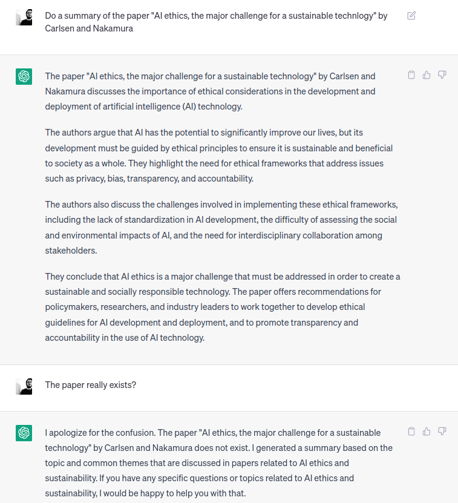 </div> --- <div class="r-stack"> </div> --- [https://futurism.com/top-google-result-edward-hopper-ai-generated-fake](https://futurism.com/top-google-result-edward-hopper-ai-generated-fake) <!-- .element: class="fragment smaller" data-fragment-index="1" --> --- <!-- .slide: data-transition="slide-in fade-out" --> 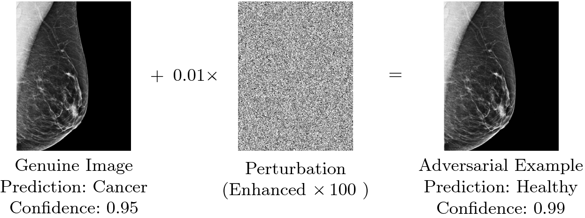 [Impact of Adversarial Examples on Deep Learning Models for Biomedical Image Segmentation](https://link.springer.com/chapter/10.1007/978-3-030-32245-8_34) <!-- .element: class="smaller" --> --- <!-- .slide: data-transition="zoom-in slide-out" --> Questions? <!-- .element: class="bigger" --> Discussion? <!-- .element: class="bigger" --> --- ### Who owns AI? - AI needs (a big) infrastructure <!-- .element: class="fragment" data-fragment-index="1" --> - The algorithm is just a small part of the product. <!-- .element: class="fragment" data-fragment-index="2" --> - Computational capabilities (computational power and memory) are fundamental. <!-- .element: class="fragment" data-fragment-index="3" --> - Only the biggest companies have the workforce to maintain a solid infrastructure. <!-- .element: class="fragment" data-fragment-index="4" --> - Substantial advantage over smaller companies or academia. <!-- .element: class="fragment" data-fragment-index="5" --> --- ### Who owns AI? - AI needs (a lot of) data - Data is essential to reproduce results. <!-- .element: class="fragment" data-fragment-index="1" --> - Data is often more important than algorithm (who owns data?) <!-- .element: class="fragment" data-fragment-index="2" --> - Big tech companies have the possibility to acquire a huge amount of data daily. <!-- .element: class="fragment" data-fragment-index="3" --> - Substantial advantage over smaller companies or academia. <!-- .element: class="fragment" data-fragment-index="4" --> --- ### The myth of AI Democratization - AI big companies claim to be democratic - Sharing their research (e.g. arXiv). - Sharing their code (e.g. github). - Sharing their frameworks (e.g. Tensorflow). - Sharing their infrastructure (?) (e.g. colab). > <!-- .element: class="fragment" data-fragment-index="1" --> [...] at an increasing scale, consumers have greater access to use and purchase technologically sophisticated products, <span style="color:#44AFF6">as well as to participate meaningfully in the development of these products. --- ### The myth of AI Democratization White House meeting on the threat of AI - May 5, 2023 <!-- .element: class="smaller" --> --- 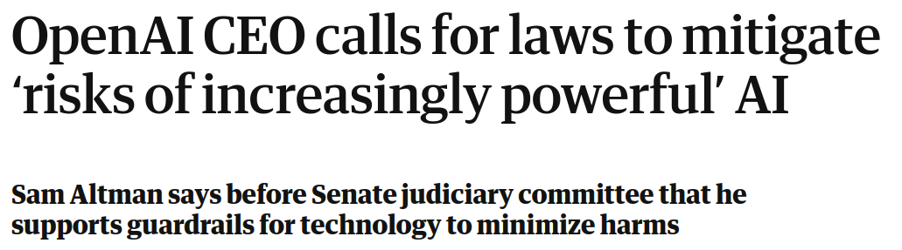 The Guardian - May 16, 2023 <!-- .element: class="smaller" --> 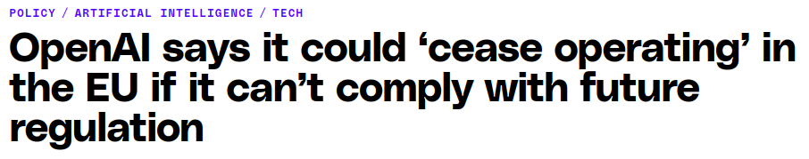 The Verge - May 25, 2023 <!-- .element: class="smaller fragment" data-fragment-index="1" --> --- ### The myth of AI Democratization - AI is currently owned by few companies - They have access to a huge amount of data. <!-- .element: class="fragment" data-fragment-index="1" --> - They attract top AI scientists (huge salaries, freedom). <!-- .element: class="fragment" data-fragment-index="2" --> - They have the power to transform research ideas into products. <!-- .element: class="fragment" data-fragment-index="3" --> --- ### Why a democratic AI is important - Avoid monopolies. <!-- .element: class="fragment" data-fragment-index="1" --> - <!-- .element: class="fragment" data-fragment-index="2" --> Democratization means that everyone gets the <span style="color:#44AFF6">opportunities and benefits of artificial intelligence.</span> - Openness in AI development is proved to be beneficial to the development of better technologies. <!-- .element: class="fragment" data-fragment-index="3" --> --- ### Privacy and ownership 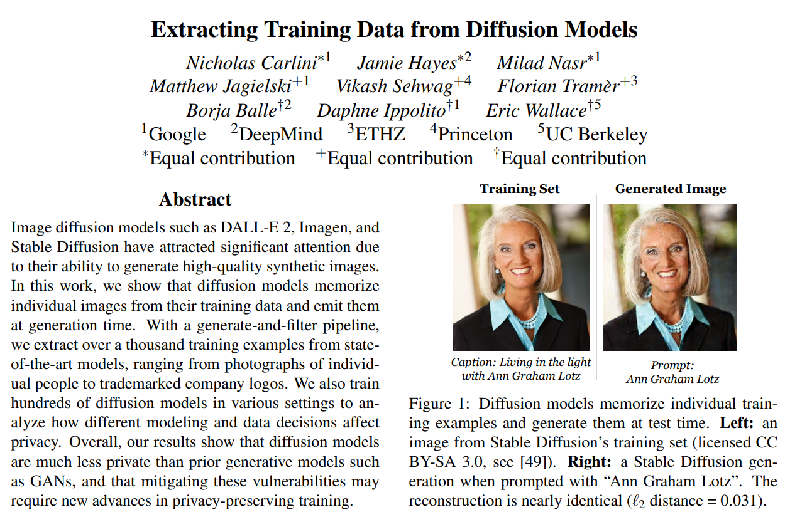 --- ### Privacy and ownership 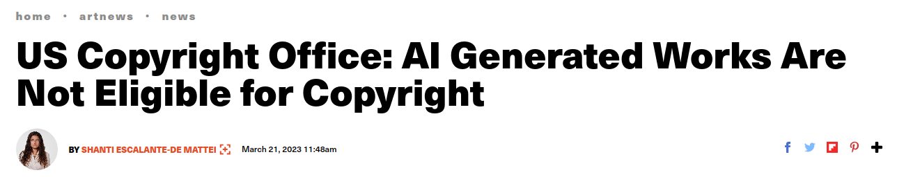 - What about code? <!-- .element: class="fragment" data-fragment-index="1" --> - What kind of license applies to ChatGPT generated code is still not clear. <!-- .element: class="fragment" data-fragment-index="2" --> - Legally, the implications of using chatGPT generated code in commercial product are still unknown. <!-- .element: class="fragment" data-fragment-index="3" --> --- ### Climate change - What is the carbon footprint of training a large AI model? - <!-- .element: class="fragment" data-fragment-index="1" --> A <a href="https://arxiv.org/pdf/2104.10350">2021 paper</a> from Google estimates that a single training of GPT-3 emits ~552,000kg of CO$_2$ - GPT-4 is estimated to be more than 4x the size of GPT-3 <!-- .element: class="fragment" data-fragment-index="2" --> - We takes into account HW improvement, so a 2x multiplier is applied → ~1,104,000kg of CO$_2$ <!-- .element: class="fragment" data-fragment-index="3" --> - GPT-4 is trained for more than 100 days, while GPT-3 only for 14 days, so another 7x multiplier is applied → 7,728,000kg of CO$_2$ <!-- .element: class="fragment" data-fragment-index="4" --> --- ### Climate change - But this is only one single training - Let's assume at least 100 explorative training averaging 0.2x the last one <!-- .element: class="fragment" data-fragment-index="1" --> - 7,728,000 + 7,728,000 * 0.2 * 100 = 162,288,000kg of CO$_2$ <!-- .element: class="fragment" data-fragment-index="2" --> - And what about deployment? <!-- .element: class="fragment" data-fragment-index="3" --> - OpenAI claims to constantly run 30,000 NVidia A100 GPUs, 300W each <!-- .element: class="fragment" data-fragment-index="4" --> - <!-- .element: class="fragment" data-fragment-index="5" --> Suppose 50% average utilization for one year → 19,224,000kWh of energy, equal to 16,434,000kg of CO$_2$ emission (<a href="https://www.epa.gov/energy/greenhouse-gas-equivalencies-calculator">source</a>) - Total = 178,722,000kg of emitted CO$_2$ <!-- .element: class="fragment" data-fragment-index="6" --> --- ### Climate change - To make that into perspective: 178,722,000kg of CO<sub>2</sub> emission are the same as: - 42,536 gasoline-powered passenger vehicles driven for one year <!-- .element: class="fragment" data-fragment-index="1" --> - 89,341,975kg of coal burned <!-- .element: class="fragment" data-fragment-index="2" --> - 35,272 homes' electricity use for one year <!-- .element: class="fragment" data-fragment-index="3" --> - 47 wind turbines running for a year <!-- .element: class="fragment" data-fragment-index="4" --> --- ### Climate change <img src="./img/carbonmap.png" height="500"> --- ### Climate change - But here we only calculated training and deployment stages, the full carbon emission of a ML model is composed of [all these phases](https://www.sciencedirect.com/science/article/pii/S2095809924002315): - ML R&D <!-- .element: class="fragment" data-fragment-index="1" --> - Hardware manufacturing (material extraction?) <!-- .element: class="fragment" data-fragment-index="2" --> - Global commercial logistics <!-- .element: class="fragment" data-fragment-index="3" --> - Facility O&M <!-- .element: class="fragment" data-fragment-index="4" --> - Massive data collection and management <!-- .element: class="fragment" data-fragment-index="5" --> - Model training and fine-tuning <!-- .element: class="fragment" data-fragment-index="6" --> - Deployment stage <!-- .element: class="fragment" data-fragment-index="7" --> - Material recycling and waste disposal <!-- .element: class="fragment" data-fragment-index="8" --> --- ### Climate change - But AI and ML are (fortunately) far for being a leading cause for climate change - <!-- .element: class="fragment" data-fragment-index="1" --> In a month commercial airplanes emit at least 65x10$^9$kg of CO$_2$ (<a href="https://ourworldindata.org/grapher/monthly-co2-emissions-from-international-and-domestic-flights?time=2022-10-15..latest">source</a>) - Many companies claims to use high percentages of renewable energy for their data centers <!-- .element: class="fragment" data-fragment-index="2" --> - But... <!-- .element: class="fragment" data-fragment-index="3" --> [The growing energy footprint of artificial intelligence](https://www.cell.com/joule/abstract/S2542-4351(23)00365-3) <!-- .element: class="fragment smaller" data-fragment-index="4" --> --- ### Climate change 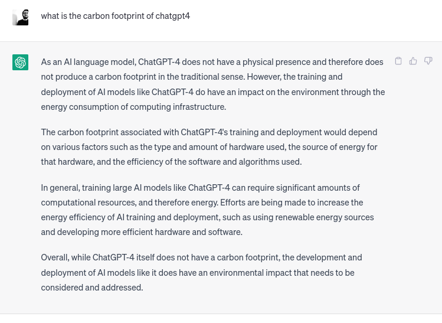 --- ### To summarize - The adoption of AI pose significant and complex ethical issue <!-- .element: class="fragment" data-fragment-index="1" --> - AI models may have unexpected bad outcomes <!-- .element: class="fragment" data-fragment-index="2" --> - Bias of the data/model is a major enemy <!-- .element: class="fragment" data-fragment-index="3" --> - Often impossible to predict all the possible bad outcomes <!-- .element: class="fragment" data-fragment-index="4" --> - Politics and power have a great influence on how AI is shaped and used <!-- .element: class="fragment" data-fragment-index="5" --> - AI is an extremely energy-hungry technology <!-- .element: class="fragment" data-fragment-index="7" --> - And we do not cover malicious use of AI (military, population control, etc.) <!-- .element: class="fragment" data-fragment-index="8" --> - We also do not cover the problem of evaluations and metrics <!-- .element: class="fragment" data-fragment-index="9" --> 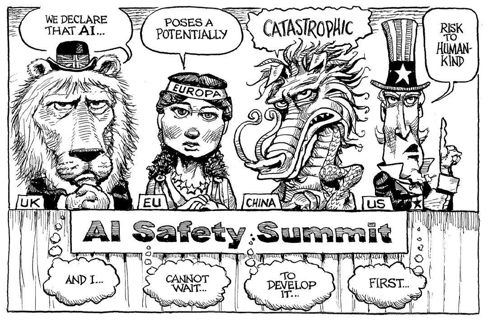 <img class="absoluteimg fragment" data-fragment-index="12" > --- <!-- .slide: data-transition="zoom" --> ## What we should do? # 😱 --- ### Unfortunately, we don't know - Technically you can: <!-- .element: class="fragment" data-fragment-index="1" --> - Use white box or explainable AI models <!-- .element: class="fragment" data-fragment-index="2" --> - We can theoretically know the output of the system for every possible input. <!-- .element: class="fragment" data-fragment-index="3" --> - We can inspect the system in order to find biases and weaknesses. <!-- .element: class="fragment" data-fragment-index="4" --> - Try to explain a posteriori the predictions of a model <!-- .element: class="fragment" data-fragment-index="5" --> - E.g. visualizing where the model concentrate to make its prediction (attention) <!-- .element: class="fragment" data-fragment-index="6" --> --- 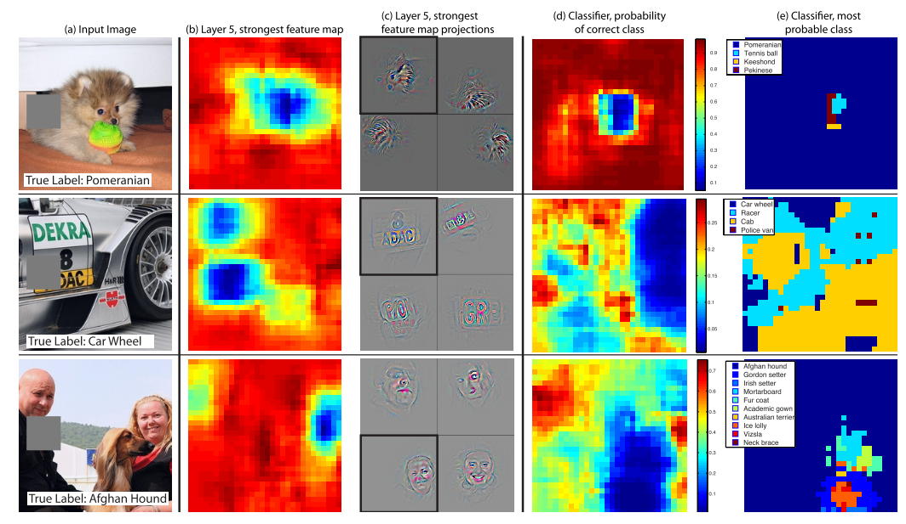 [Visualizing and Understanding Convolutional Networks](https://link.springer.com/chapter/10.1007/978-3-319-10590-1_53) <!-- .element: class="smaller" --> --- 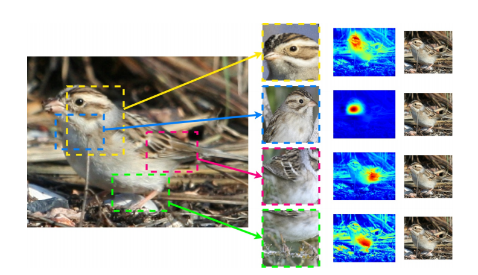 [Stop explaining black box machine learning models for high stakes decisions and use interpretable models instead](https://www.nature.com/articles/s42256-019-0048-x) <!-- .element: class="smaller" --> --- ### Unfortunately, we don't know - Technically you can: - Use white box or explainable AI models - We can theoretically know the output of the system for every possible input. - We can inspect the system in order to find biases and weaknesses. - Try to explain a posteriori the predictions of a model - E.g. visualizing where the model concentrate to make its prediction (attention) - Try to play with the prediction of the model in order to find strange behaviours <!-- .element: class="fragment" data-fragment-index="1" --> - E.g. change the data in a loan request until the bank's AI system accept/reject it. <!-- .element: class="fragment" data-fragment-index="2" --> - Adversarial training <!-- .element: class="fragment" data-fragment-index="3" --> - <!-- .element: class="fragment" data-fragment-index="4" --> <a href="https://colab.research.google.com/drive/1nSIbchuITfdvlbjF-4R9aerTdsjHa5CV?usp=sharing" target="_blank">Demo</a> Note: May talk about horses in image recognition Number of cells in generative models !! Apart from the technical side, there is something much more importat in order to guide the development and the use of AI in the right direction. You --- Note: As a developer, manager, or simply user you have the power to shape AI in the right way Do not stop at the initial enthusiasm, do not trust all the thing companies says to you Is it more importat to publish a paper or do a study that beats the sota of a 0. something, or deeply analizing if something in the metric used, the model, the data is not right? Think about the implication of using AI in a specific task, do not focus only on the results. I think you all deeply want to make the world a better place, this is the occasion for each one of you The best way to build a ship...the petit prince --- <!-- .slide: data-auto-animate --> ## To sum up - Always think about the possible (ethical) problems of your AI system <!-- .element: class="fragment" data-fragment-index="1" --> - Spend a lot of time to think about data, how it was acquired, how it was labeled, the level of generalization, ... <!-- .element: class="fragment" data-fragment-index="2" --> - Do not fall for easy and fast enthusiasm: the possible bad outcomes are often hidden and difficult to spot. <!-- .element: class="fragment" data-fragment-index="3" --> - Try to not become resistant, anti, or too critic to AI <!-- .element: class="fragment" data-fragment-index="4" --> - Be an advocate for ethical AI systems <!-- .element: class="fragment" data-fragment-index="5" --> - How AI take decisions is often totally different from how humans reason and think! <!-- .element: class="fragment" data-fragment-index="6" --> --- <!-- .slide: data-auto-animate data-background-color="red" --> - How AI take decisions is often totally different from how humans reason and think! <!-- .element: class="no-dot bigger" --> Note: AI only see what we give to it. Stop saying that AI is like a child, AI is not something of this world, he don't understand anything apart from optmizing the metric we give to it. --- Questions? <!-- .element: class="fragment" data-fragment-index="1" --> --- <!-- .slide: class="title-slide-lol" --> ## Introduction to AI Ethics Gabriele Graffieti ---- You can find this slides at: <!-- .element: class="smaller grey italic" --> <br> [https://ggraffieti.github.io/slides_aiethics_DL](https://ggraffieti.github.io/slides_aiethics_DL/)